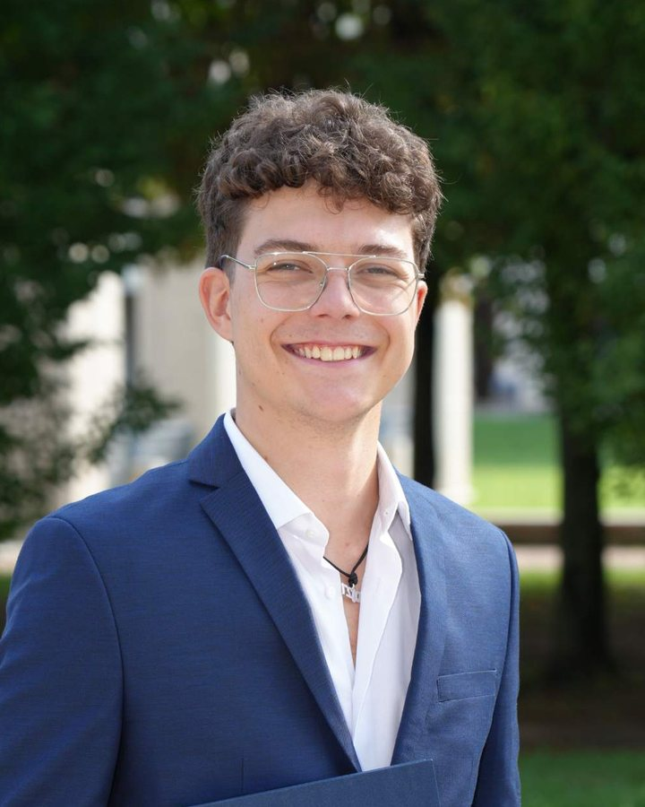

An Android app that finds blurry and duplicate photos with on-device AI: quality filters, a NIMA aesthetic model, a taste model trained on the phone and duplicate grouping. I built the whole AI pipeline.
TensorFlow Lite, OpenCV, ML Kit

I study Automation and Intelligent Cyber-Physical Systems, and most of what I build sits between software and the physical world: simulators, embedded firmware, data-driven models and on-device AI.
I have hands-on experience with embedded systems in C and C++ on the ESP32, control design in MATLAB and Simulink, concurrent software in Rust with Tokio, and object-oriented design in Java.
I want to grow in robotics, and I'm looking for thesis and internship work abroad to do it.
An Android app that finds blurry and duplicate photos with on-device AI: quality filters, a NIMA aesthetic model, a taste model trained on the phone and duplicate grouping. I built the whole AI pipeline.
TensorFlow Lite, OpenCV, ML Kit
Decentralized formation control of heterogeneous nonlinear mobile robots, using feedback linearization and pinning control.
Designed and simulated an automated beer bottling cell, programmed its multi-tasking logic in RAPID and configured the I/O networks that tie the robot to the external machinery.
A photo frame that wakes up when someone walks by: ultrasonic presence detection, a TFT display, images from an SD card and a temperature and humidity readout, with RAM usage kept under control.
A convolutional network that predicts emotions from ECG and electrodermal signals, comparing early and late sensor fusion, with SHAP analysis.
A study of Structural Causal Models and of causal discovery with the PC algorithm, which uses conditional independence tests to tell correlation from cause and effect.
A full-stack asynchronous fleet tracker with a concurrent Tokio backend and an interactive map client.
A guided-tour reservation system built with MVC, Strategy and State patterns and JSON persistence.
A Java application that uses the Gurobi Optimizer to model and solve optimization problems on custom data instances.
Politecnico di Torino. Track in Automation and Intelligent Cyber-Physical Systems.
Università degli Studi di Brescia. Thesis: Introduction to Causal Reasoning.
Liceo Scientifico Lorenzo Federici.